241 — Lakehouse, warehouse, mesh y contratos de datos
Parte: 20 — Plataformas cloud de datos, analítica, IA y agentes
Nivel: avanzado · Horas estimadas: 4
Laboratorio: data · Estado: EXECUTABLE_CORE
🎯 Propósito
Elegir la arquitectura de datos —almacén, lago unificado o malla— con el criterio que decide de verdad, que no es técnico: quién es responsable de que un dato sea correcto. La clase compara las tres formas por lo que resuelven y lo que cuestan, y desarrolla la pieza que las hace funcionar o fracasar a todas: el contrato de datos, con la advertencia de la ley 16 sobre por qué se incumplen.
📚 Resultados de aprendizaje
Al finalizar podrás:
- Distinguir almacén, lago unificado y malla por su modelo de responsabilidad.
- Elegir la forma que corresponde al tamaño y a la madurez de la organización.
- Escribir un contrato de datos con lo mínimo que lo hace útil.
- Versionar y evolucionar contratos sin romper a los consumidores.
- Evitar que el contrato se convierta en trámite que se rodea.
🧩 Conceptos centrales
| Concepto | Comprensión verificable |
|---|---|
almacén |
Modelo centralizado: un equipo transforma los datos de todos y los publica. Consistente y con cuello de botella. |
lago unificado |
Almacenamiento barato con motores encima y una capa de metadatos y transacciones que lo hace fiable. |
malla de datos |
Cada dominio publica sus propios datos como producto, con dueño, contrato y calidad. |
producto de datos |
Conjunto publicado con dueño, contrato, calidad declarada y consumidores conocidos. |
contrato de datos |
Acuerdo explícito entre quien publica y quien consume: esquema, semántica, frescura, calidad y compatibilidad. |
capa de tabla transaccional |
Formato sobre ficheros que aporta transacciones, versiones y evolución de esquema. |
🧠 Modelo mental
Una plataforma de IA sigue siendo un sistema de datos: necesita procedencia, evaluación, límites de costo, seguridad y operación antes de una interfaz inteligente.
Aplicado a esta clase, separa siempre cuatro planos: intención (qué necesita el usuario), configuración (qué declaramos), estado observado (qué existe de verdad) y evidencia (cómo sabemos que cumple). Confundirlos produce diseños que se ven correctos en un diagrama pero fallan al operar.
🗺️ Flujo de razonamiento

📖 Desarrollo
1. Tres formas, un criterio
Las tres arquitecturas se comparan mal cuando se comparan por tecnología. El criterio que decide es otro.
LA PREGUNTA
¿quién responde de que un dato sea correcto?
un equipo central → almacén o lago
el dominio que lo genera → malla
→ y esa es una decisión organizativa que arrastra la
técnica, no al revés ley 21
Las tres formas, con lo que resuelven y lo que cuestan:
ALMACÉN
un equipo central recibe los datos de todos, los
transforma y los publica modelados
+ consistencia: los mismos nombres significan lo mismo
+ un solo sitio donde buscar
− CUELLO DE BOTELLA: cada petición espera al equipo
central
− y ese equipo no conoce el dominio de nadie
→ funciona muy bien hasta cierto tamaño, y deja de
funcionar de golpe
LAGO UNIFICADO
almacenamiento barato con motores encima, y una capa que
aporta transacciones, versiones y evolución de esquema
+ admite cualquier formato y volumen
+ separa almacenamiento de cómputo: se paga por lo que se
consulta
+ y con la capa transaccional, deja de ser un vertedero
− sigue habiendo un equipo central si nadie más publica
MALLA
cada dominio publica sus datos como PRODUCTO, con dueño,
contrato y calidad
+ elimina el cuello de botella
+ quien conoce el dato responde de él
− exige tres cosas a la vez: plataforma común, contratos
y dueños reales
− si falta alguna, produce el caos que decía evitar
Y el criterio práctico:
¿menos de 4 o 5 equipos que producen datos?
→ almacén o lago; la malla añade coordinación sin
beneficio
¿el equipo central es el cuello y las peticiones esperan
meses?
→ malla, pero SOLO si hay plataforma y dueños
¿hay dueños dispuestos a responder de sus datos?
→ si la respuesta es no, la malla no se puede montar
→ y decirlo antes ahorra un año ley 20
Y la advertencia sobre la malla:
la malla no es una tecnología: es un reparto de
responsabilidad
→ montarla comprando un producto y sin cambiar quién
responde produce lo mismo de antes, con más piezas
clases 172, 183
2. El lago que sí funciona
El lago de datos tuvo mala fama por un motivo concreto, y las capas transaccionales lo resuelven.
EL PROBLEMA DEL LAGO ANTIGUO
ficheros en un almacén, sin transacciones
→ una escritura a medias deja datos corruptos
→ dos procesos escribiendo, resultados imposibles
→ cambiar un esquema, un proyecto
→ y borrar una fila concreta, casi imposible
→ resultado: un vertedero donde nadie confía
LA CAPA DE TABLA TRANSACCIONAL
aporta sobre los ficheros
transacciones: la escritura se ve entera o no se ve
VERSIONES: se puede consultar el estado de ayer
evolución de esquema: añadir y renombrar columnas
borrado y actualización por fila
y compactación de ficheros pequeños
→ y con eso, el lago deja de ser un vertedero
Y las decisiones que hay que tomar al montarlo:
LA ORGANIZACIÓN EN CAPAS
bruto tal como llegó, inmutable
refinado limpio, tipado, deduplicado
publicado modelado para consumir
→ y cada capa con su retención y su dueño
→ el bruto se conserva porque permite reprocesar
clase 242
EL PARTICIONADO
por fecha, casi siempre
→ y con cuidado: demasiadas particiones producen millones
de ficheros diminutos y consultas lentísimas
LA COMPACTACIÓN
los ficheros pequeños hay que juntarlos
→ si no, cada consulta abre miles de ficheros
→ es mantenimiento, y hay que programarlo ley 25
Y LA RETENCIÓN DE VERSIONES
las versiones antiguas ocupan
→ limpieza programada, con la ventana que se necesite
para consultar el pasado
Y una advertencia de coste:
separar almacenamiento de cómputo abarata el
almacenamiento y hace el cómputo visible
→ y entonces la factura la domina quién consulta y cómo
clase 236, ley 28
3. El contrato de datos
El contrato es lo que hace que un dato sea usable por alguien que no lo produjo. Sin él, cada consumidor descubre la semántica leyendo filas.
LO MÍNIMO QUE DEBE TENER
ESQUEMA campos, tipos, obligatoriedad
SEMÁNTICA qué significa cada campo
→ «importe» ¿con impuestos? ¿en qué
moneda? ¿de qué momento?
→ esta es la parte que más se omite y la
que más errores causa clase 188
GRANULARIDAD qué representa una fila
CLAVE qué identifica una fila de forma única
FRESCURA cada cuánto se actualiza y cuál es el
retraso máximo
CALIDAD reglas comprobables, con umbrales
COMPATIBILIDAD qué cambios se permiten sin aviso
DUEÑO un equipo, con un canal
CONSUMIDORES quiénes lo usan ← imprescindible
para poder cambiar y para poder retirar
ley 20, clase 188
RETIRADA cómo y con cuánto aviso
Y las dos partes que lo distinguen de un esquema:
1 LA SEMÁNTICA ESCRITA
«pedido_confirmado» ¿es cuando el usuario pulsa o cuando
el pago se aprueba?
→ la diferencia son horas y miles de filas
→ y dos consumidores que lo interpreten distinto
producen informes que no cuadran
2 LA FRESCURA Y LA CALIDAD, CON CIFRAS
«se actualiza cada 15 minutos; el retraso no supera 1
hora el 99 % de los días»
«el campo cliente no es nulo en más del 0,1 % de las
filas»
→ y esas cifras se COMPRUEBAN, o el contrato es una
declaración de intenciones clase 243
La evolución, con las reglas de la clase 188:
ADITIVO añadir campo opcional seguro
RESTRICTIVO quitar, renombrar, cambiar tipo rompe
SEMÁNTICO mismo campo, otro significado ROMPE EN
SILENCIO
→ y aquí el semántico es aún más peligroso que en una API:
un informe que cambia de significado no da error, da otro
número
y el patrón
expandir y contraer: campo nuevo, migrar consumidores,
medir que nadie usa el viejo, retirar
→ y el paso de MEDIR exige saber quién consume
Y la versión del contrato, que hay que llevar:
el contrato tiene versión
y los consumidores declaran contra qué versión leen
→ así se sabe a quién afecta un cambio
→ y se puede publicar la versión nueva conviviendo con la
anterior
4. Por qué se incumplen, y cómo evitarlo
Los contratos de datos fracasan por el mismo mecanismo que los controles de la parte 14.
SI PUBLICAR CON CONTRATO CUESTA MÁS QUE PUBLICAR SIN ÉL,
SE PUBLICARÁ SIN ÉL ley 16
y las formas de rodearlo
copiar la tabla a otro sitio y publicarla allí
dar acceso directo a la base operativa
exportar a una hoja de cálculo
→ y entonces el dato circula sin contrato, sin calidad
y sin dueño ley 20
Y lo que hace que se cumplan:
1 EL CARRIL FÁCIL LO TRAE HECHO
una plantilla de producto de datos que genera el
contrato, las comprobaciones y el registro
→ publicar CON contrato debe ser lo más rápido
clase 171
2 EL CONTRATO SE GENERA, NO SE ESCRIBE A MANO
el esquema, del propio dato
la frescura, de la ejecución
la calidad, de las comprobaciones
→ y a mano solo la SEMÁNTICA, que es lo que no se puede
deducir
3 EL CONSUMO SIN CONTRATO SE IMPIDE
el acceso directo a las bases operativas, cerrado
→ y eso obliga a que el productor publique de verdad
clase 200
4 Y HAY UN CATÁLOGO donde se busca
→ si encontrar un dato es más difícil que pedírselo a
alguien por mensaje, el catálogo no existe
Y la medida de si funciona:
proporción de conjuntos consumidos que TIENEN contrato
proporción de accesos que van al producto publicado frente
a los que van a la base operativa
y tiempo desde que alguien necesita un dato hasta que lo
tiene
→ si sigue siendo de semanas, no se ha resuelto nada
Y una advertencia sobre el catálogo:
un catálogo que se rellena a mano queda obsoleto en meses
→ se alimenta de los propios contratos y del linaje
clases 236, 243
→ y lo que no está en el catálogo pero se consume es un
hallazgo ley 24
Y la lista de comprobación de la clase:
☐ está decidido quién responde de que un dato sea correcto
☐ la forma elegida corresponde al número de equipos
productores
☐ si es malla, hay plataforma, contratos y dueños reales
☐ el lago usa capa transaccional, no ficheros sueltos
☐ hay capas: bruto, refinado y publicado, con retención
☐ hay compactación programada
☐ cada producto de datos tiene contrato
☐ el contrato incluye SEMÁNTICA escrita
☐ incluye frescura y calidad con cifras comprobables
☐ incluye dueño y consumidores conocidos
☐ el contrato tiene versión y los consumidores la declaran
☐ publicar con contrato es más rápido que sin él
☐ el acceso directo a las bases operativas está cerrado
☐ hay catálogo alimentado automáticamente
Y el cierre que enlaza con la clase siguiente: con la arquitectura y los contratos decididos, queda traer los datos. Ingesta por lotes, captura de cambios y continua es la materia de la clase 242.
🔬 Ejemplo trabajado
CloudShop rehace su plataforma de datos. Lo que sigue es por qué el almacén central dejó de funcionar, la decisión de malla que se tomó a medias, y el campo «importe» que significaba tres cosas distintas.
El punto de partida:
equipos que producen datos 14
equipo central de datos 6 personas
peticiones de datos nuevos en cola 41
tiempo medio de espera 11 semanas
y lo que hacían los equipos mientras esperaban
acceso directo a las réplicas de lectura de las bases
operativas 19
exportaciones a hojas de cálculo 34
copias de tablas a sus propios proyectos 22
→ el 71 % del consumo de datos NO pasaba por la plataforma
→ y esos datos no tenían contrato, ni calidad, ni dueño
ley 16, ley 20
El campo «importe», que significaba tres cosas.
se descubrió al no cuadrar tres informes
informe de finanzas importe = sin impuestos, en
euros, del momento del pedido
panel de operaciones importe = con impuestos, en
euros, del momento del envío
informe de marketing importe = con impuestos y con
descuento aplicado, del momento
del pago
los tres leían de tablas distintas, todas llamadas
«pedidos», todas con un campo «importe»
y ninguna decía qué significaba
diferencia acumulada en el cierre trimestral 214.000 €
tiempo de conciliación 3 semanas
y la causa
ninguna de las tres tablas tenía contrato
→ y el esquema era idéntico: mismo nombre, mismo tipo
→ el esquema NO es el contrato clase 188
La decisión de arquitectura.
se planteó malla de datos
y se comprobaron las tres condiciones
1 PLATAFORMA COMÚN no existía
→ publicar un producto de datos exigía montar
infraestructura propia
2 CONTRATOS no existían
3 DUEÑOS DISPUESTOS parcialmente
de los 14 equipos, 6 aceptaron responder de sus datos
5 dijeron que no tenían capacidad
3 no contestaron
→ y la conclusión honesta
con 6 de 14, no se puede montar una malla completa
y montarla a medias produce dos sistemas y ningún dueño
clase 172
LA DECISIÓN
fase 1 lago unificado con capa transaccional, operado
por el equipo central
y los 6 dominios dispuestos publican SUS
productos sobre esa plataforma
fase 2 a medida que otros dominios se sumen, se amplía
y NO se declara «tenemos malla»
y el criterio registrado
«un dominio publica sus datos cuando tiene un dueño
nombrado y acepta el contrato; hasta entonces, los
publica el equipo central» clase 190
La plataforma, montada primero.
lo que la plantilla de producto de datos genera
el almacenamiento en la capa correspondiente
la tabla transaccional con su esquema
el trabajo de publicación con su orquestación
clase 243
las comprobaciones de calidad declaradas
el contrato, generado del esquema y de la ejecución
el registro en el catálogo
los permisos por columna clase 236
y las alertas de frescura y de calidad
tiempo para publicar un producto de datos nuevo
antes 11 semanas
después 2 días
→ y ese número es lo que hizo que los equipos publicaran
con contrato en vez de rodearlo ley 16
El contrato, con la parte que costó escribir.
el de «pedidos confirmados», completo
esquema 23 campos, generado
granularidad una fila por pedido
clave identificador de pedido
SEMÁNTICA escrita a mano, 23 líneas
confirmado_en momento en que el PAGO fue aprobado
por la pasarela, en UTC
→ no cuando el usuario pulsó
importe_neto sin impuestos ni descuentos, en euros,
convertido al tipo del día del pago
importe_bruto con impuestos, sin descuentos
importe_pagado lo que el cliente pagó realmente
→ y la regla: si hace falta otro importe, se añade un
campo; NUNCA se cambia el significado de estos tres
clase 188
frescura cada 15 min; retraso ≤ 1 h el 99 % de los
días
calidad identificador no nulo y único: 100 %
cliente no nulo: > 99,9 %
importe_neto ≤ importe_bruto: 100 %
confirmado_en no futuro: 100 %
compatibilidad aditivo sin aviso; el resto, 60 días
dueño equipo de pedidos, con canal
consumidores 9 declarados
retirada 90 días de aviso
Y el efecto de la semántica escrita:
los tres informes se rehicieron contra el contrato
finanzas usa importe_neto
operaciones usa importe_bruto
marketing usa importe_pagado
diferencia en el cierre siguiente 0 €
tiempo de conciliación 3 semanas → 0
El lago, con lo que hubo que aprender:
capas
bruto tal como llega, inmutable, 90 días
refinado limpio y tipado, 2 años
publicado productos de datos, según contrato
y los dos problemas del primer trimestre
1 FICHEROS PEQUEÑOS
la ingesta continua escribía cada 30 s
→ 2.880 ficheros al día por tabla
→ una consulta sobre 90 días abría 259.000 ficheros
→ 41 s en vez de 2 s
corrección compactación programada cada hora
y escritura cada 5 min en vez de 30 s
2 VERSIONES ANTIGUAS
la capa transaccional conserva versiones
→ almacenamiento creciendo un 8 % semanal
corrección limpieza programada, conservando 7 días de
versiones
→ suficiente para el reproceso y para
consultar el pasado reciente
almacenamiento -61 %
El cierre del acceso directo:
las 19 conexiones directas a réplicas operativas
se avisó con 90 días
se publicaron los productos equivalentes
se midió el uso hasta llegar a cero clase 188
y se cerró el acceso
de las 19
14 se sustituyeron por productos de datos
3 resultaron no usarse
2 eran procesos operativos, no de análisis
→ se rehicieron contra la API clase 183
proporción del consumo que pasa por la plataforma
antes 29 %
después 96 %
El resultado, al año:
```text antes después tiempo para publicar un producto 11 semanas 2 días peticiones en cola 41 3 consumo que pasa por la plataforma 29 % 96 % conjuntos consumidos con contrato 0 % 91 % accesos directos a bases operativas 19 0 informes que no cuadran 3 0 tiempo de conciliación trimestral 3 semanas 0 dominios que publican sus propios datos 0 6 almacenamiento del lago — -61 %
**La lección que esta clase deja**: el equipo central no era el problema: **era el cuello, y el 71 % del consumo lo estaba rodeando** con exportaciones y accesos directos, exactamente como la ley 16 predice. Y el error más caro del año —doscientos catorce mil euros de descuadre— no lo causó ninguna tecnología: lo causó **un campo llamado «importe» que significaba tres cosas distintas y cuyo esquema era idéntico en las tres tablas**.
## 🧪 Laboratorio guiado
Ejecuta desde la raíz:
```bash
python classes/part-20-cloud-data-ai-platforms/241-lakehouse-warehouse-mesh-y-contratos-de-datos/lab.py
El laboratorio selecciona el motor de práctica data y produce
lab_result.json. El escenario, sus comprobaciones y el artefacto esperado corresponden a
esta clase; no requiere credenciales y deja explícito qué debe revalidarse en un sandbox real.
- Lee
exercise.stepsy formula una predicción antes de ejecutar. - Ejecuta la práctica y verifica todos los elementos de
checks. - Provoca el caso de
negative_testy explica la señal observada. - Materializa
data-architectureenevidence/usando la plantilla indicada. - Para proveedor real, sigue
sandbox.requires, registra costo y ejecutadestroy.
Evidencia esperada
El artefacto principal es un modelo de datos ligado a patrones de acceso. Además, la entrega debe incluir el comando ejecutado, la salida estructurada y una conclusión que no exceda lo observado.
🏆 Reto verificable
Construye data-architecture para el caso CloudShop. Incluye una alternativa descartada,
un supuesto que pueda falsarse, una prueba de fallo y una decisión de rollback.
✅ Criterio de aceptación
- [ ]
lab.pytermina con código 0 y genera JSON válido. - [ ] La entrega conecta al menos tres requisitos con mecanismos verificables.
- [ ] Existe una prueba positiva y una prueba negativa con evidencia.
- [ ] Seguridad, costo y operación aparecen como decisiones, no como anexos.
- [ ] Se declara una limitación y una condición que obligaría a revisar el diseño.
- [ ] Otra persona puede repetir el recorrido sin conocimiento tácito.
⚠️ Errores frecuentes
| Síntoma | Causa probable | Corrección |
|---|---|---|
| Los equipos rodean la plataforma con exportaciones y accesos directos | Publicar por el camino oficial tarda semanas y hacerlo por fuera, minutos | Haz que publicar con contrato sea lo más rápido, con una plantilla que lo genere todo, y cierra después el acceso directo. |
| Tres informes con el mismo campo dan números distintos | El esquema coincide pero la semántica no está escrita | Escribe qué significa cada campo en el contrato; si hace falta otro significado, se añade un campo, nunca se cambia el existente. |
| La malla de datos produce más caos que el modelo anterior | Faltaba alguna de las tres condiciones: plataforma, contratos o dueños reales | Comprueba las tres antes de empezar; con dueños insuficientes, empieza por la plataforma y los contratos y suma dominios cuando acepten. |
| Las consultas sobre el lago son lentísimas | Millones de ficheros pequeños por escrituras muy frecuentes | Escribe con menos frecuencia y programa compactación; el mantenimiento del lago es trabajo, no ocurre solo. |
| El almacenamiento del lago crece sin control | Las versiones antiguas de la capa transaccional se conservan indefinidamente | Programa la limpieza conservando la ventana que necesites para reprocesar y consultar el pasado. |
| No se puede cambiar un contrato porque nadie sabe quién lo usa | Los consumidores no están declarados | Incluye los consumidores en el contrato y mide el uso real antes de retirar nada. |
🛡️ Seguridad, ética y costo
Trabaja con cuentas propias o sandboxes autorizados. No publiques secretos, identificadores reales ni datos personales. Antes de crear recursos pagos define presupuesto, etiquetas y comando de destrucción; después verifica que no queden recursos huérfanos. Los ejemplos locales enseñan contratos, pero no certifican cumplimiento ni disponibilidad de producción.
❓ Preguntas de comprobación
- ¿Qué pregunta decide entre almacén, lago y malla?
- ¿Qué tres condiciones exige una malla de datos y qué pasa si falta una?
- ¿Qué aporta la capa transaccional sobre ficheros sueltos?
- ¿Qué parte del contrato no se puede generar y por qué es la que más errores evita?
- ¿Por qué se incumplen los contratos de datos y qué lo evita?
🔗 Referencias
- Dehghani, Z. (2022). Data Mesh: Delivering Data-Driven Value at Scale. https://www.oreilly.com/library/view/data-mesh/9781492092384/
- Armbrust, M. y otros (2021). Lakehouse: a new generation of open platforms. https://www.cidrdb.org/cidr2021/papers/cidr2021_paper17.pdf
- Delta Lake (2025). Table format and transaction log. https://docs.delta.io/latest/index.html
- Apache Iceberg (2025). Table specification. https://iceberg.apache.org/spec/
- Open Data Contract Standard (2025). https://bitol-io.github.io/open-data-contract-standard/latest/
- Documentación oficial vigente del servicio implementado; registra URL y fecha de consulta.
📥 Descargar: Parte 20 en PDF · Manual integral